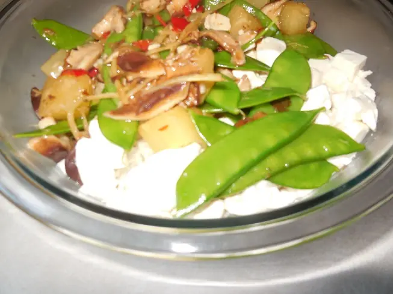

Фото: ParentingPatch, CC BY-SA 3.0

Тофу с овощами и соевым соусом
Румяные кубики тофу с брокколи, перцем и морковью в соевом соусе
30 мин3 порц.330 ккал на порциюБ 16 · Ж 20 · У 26Азиатская кухня
Продукты на 3 порц.
- Тофу400 г
- Брокколи250 г
- Перец болгарский1 шт
- Морковь1 шт
- Лук репчатый1 шт
- Чеснок2 зуб.
- Имбирь10 г
- Соевый соус3 ст. л.
- Крахмал1 ст. л.
- Сахар1 ч. л.
- Вода50 мл
- Растительное масло3 ст. л.
- Кунжут по желанию2 ч. л.
- Зелёный лук по желаниюпо вкусу
Как готовить
- Промокните тофу салфеткой, нарежьте кубиками 2 см и обваляйте в половине крахмала.
- Обжарьте тофу на 2 ст. л. масла на среднем огне 8 минут, переворачивая, до золотистой корочки со всех сторон. Переложите на тарелку.
- Нарежьте лук и перец полосками, морковь тонкими кружками, брокколи разберите на соцветия.
- Влейте оставшееся масло, на сильном огне жарьте морковь и брокколи 3 минуты, затем лук и перец ещё 3 минуты. Овощи должны остаться чуть хрустящими.
- Смешайте соевый соус, воду, сахар, остаток крахмала, тёртые чеснок и имбирь.
- Верните тофу, влейте соус и прогревайте 1-2 минуты, помешивая, пока соус не загустеет и не станет глянцевым.
- Посыпьте кунжутом и зелёным луком. Подавайте с рисом.
Совет. Чтобы тофу не разваливался, не трогайте его первые 2-3 минуты жарки. Соевый соус солёный, поэтому соль не добавляйте.